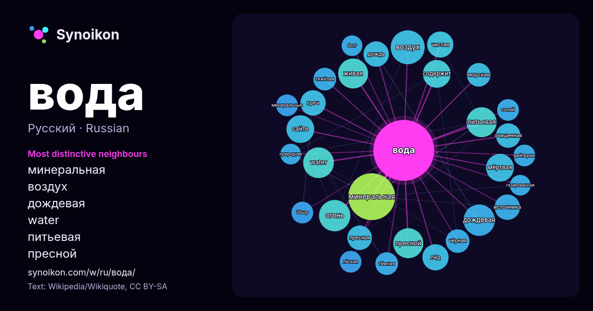

Русский · популярное слово
вода
“water” · Слова вокруг него в 1584 вхождениях из Википедии, Wikiquote.

Самые характерные соседи
- минеральная 51×
- воздух 24×
- дождевая 24×
- water 22×
- питьевая 22×
- пресной 21×
- живая 21×
- мёртвая 19×
- огонь 17×
- чистая 16×
- лёд 16×
- греч 15×
- очищенная 15×
- пресная 15×
- дождь 15×
- источника 14×
- сайте 13×
- морская 13×
- тёмная 12×
- тяжёлая 12×
× = во сколько раз чаще, чем в обычном тексте Википедии.
Самые частые соседи
- минеральная 51
- является 29
- воздух 27
- фильм 25
- дождевая 23
- огонь 23
- water 22
- живая 21
- питьевая 21
- пресной 21
- находится 20
- название 19
- мёртвая 18
- сайте 18
- содержит 18
- село 17
- лёд 16
- чистая 16
- греч 15
- дождь 15
В контексте
- агрегатное состояние вода преобразуется в лёд (кристаллы льда могут образовывать снег или иней), а в газообразное — в водяной пар. Вода также может существовать Wikipedia snippets · Вода
- Дистиллиро́ванная вода́ — вода, очищенная от растворённых в ней минеральных солей, органических веществ и других примесей путём дистилляции. Согласно российскому Wikipedia snippets · Дистиллированная вода
- 2025) Пре́сная вода́ — вода, солёность которой не превышает 0,5 ‰. Является противоположностью морской воды. Охватывает ту часть доступной воды Земли, в которой Wikipedia snippets · Пресная вода
- вода — вода, содержащая в своём составе растворённые соли, микроэлементы, а также некоторые биологически активные компоненты. Среди минеральных вод выделяют Wikipedia snippets · Минеральная вода
- Тяжёлая вода́ — обычно этот термин применяется для обозначения тяжеловодородной воды, известной также как оксид дейтерия. Тяжеловодородная вода имеет ту Wikipedia snippets · Тяжёлая вода
- Газиро́ванная вода́, газвода (устар. «шипучая вода», просторечное — «газировка») — прохладительный напиток из воды, в том числе минеральной, насыщенной Wikipedia snippets · Газированная вода
- Основной район проживания — деревни Лужицы (вод. Luuttsa [Лууттса]), Краколье (вод. Jõgõperä [Йыгыпэря]), Пиллово (вод. Pilola [Пилола]). При этом деревня Краколье Wikipedia snippets · Водь
- двухступенчатый процесс, в котором «мёртвая» и «живая» вода выполняют разные функции: «мёртвая» вода восстанавливает первоначальную целостность телесной Wikipedia snippets · Мёртвая вода
Другие слова
- бог
- власть
- деньги
- жизнь
- здоровье
- золото
- искусство
- истина
- история
- климат
- кошка
- мост
- наука
- пища
- поезд
- природа
- работа
- семья
- сердце
- смерть
- собака
- язык
Предварительно рассчитано 2026-10-09 с настройками по умолчанию (±5 слов, средний корпус). Интерактивная карта может обновить данные в реальном времени.
Интерфейс переведён машинно; исправления приветствуются.